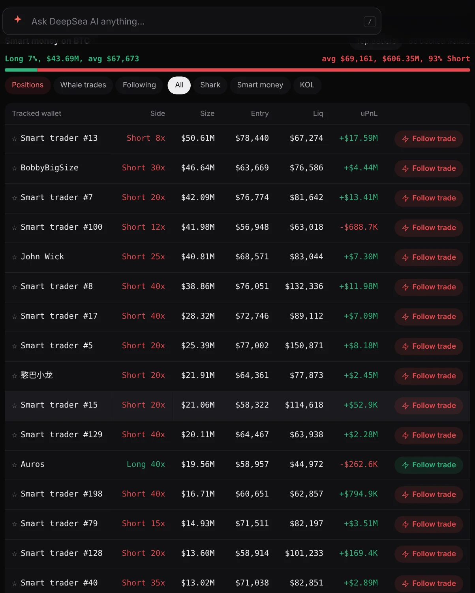

Bitcoin bounced 4%, yet top Hyperliquid traders' shorts grew to $606 million
The 88 big Hyperliquid wallets DeepSea tracks are still 93% short on bitcoin. One $42 million short from $56,948, close to the night's low, is now losing money.
Key points
- Bitcoin traded at $58,091 at 6:45 a.m. ET on Saturday, CoinGecko shows, up about 4% from $55,934 at 12:41 a.m. but still down 5.9% in a day.
- DeepSea's BTC-PERP page counts 88 top Hyperliquid wallets holding $606.17 million short and $43.67 million long at 6:45 a.m. ET, against $552.45 million and $38.15 million six hours earlier.
- CoinGecko's Hyperliquid data put open bets on the BTC-USD contract at $1.06 billion, up from $1.03 billion, and funding turned slightly positive.
 What DeepSea's data shows
What DeepSea's data shows
DeepSea's BTC-PERP page follows the bitcoin futures of the biggest traders it tracks on Hyperliquid, an on-chain futures exchange. At 6:45 a.m. ET it counted 88 wallets, one more than at 12:39 a.m. They were 93% short (betting on a fall): $606.17 million at an average entry of $69,159, against $43.67 million long at $67,677.
At 12:39 a.m. the same board read $552.45 million short at an average of $70,367 and $38.15 million long. Part of the rise is the price: the same bets are worth more dollars when bitcoin is higher. Revalued from $55,934 to $58,140, the 12:39 a.m. shorts come to about $574 million, so roughly $32 million of the increase looks like new or bigger shorts. The lower average entry points the same way.
On the ETH-PERP page the picture barely moved: 54 wallets, $303.48 million short and $80.70 million long, which is close to the 12:39 a.m. book after the 5.7% price rise.

Data: DeepSea (desea.io), checked November 21, 2026, 6:45 a.m. ET.
A big short near the low
The board's fourth-largest bet has the lowest entry among the 10 biggest shorts: Smart trader #100 holds a $41.98 million short at 12x leverage from $56,948, a price bitcoin last traded at during the overnight slide. With bitcoin back above $58,000, it shows a paper loss of $688,700 and a liquidation price of $63,018. Leverage lets a trader bet a multiple of the money put up. The liquidation price is where the exchange closes the bet by force.
The biggest bet is still an old one: Smart trader #13, $50.61 million short from $78,440, up $17.59 million. Next come BobbyBigSize with $46.64 million at 30x from $63,674 and Smart trader #7 with $42.09 million from $76,774.
The nearest short liquidation in the top 25 belongs to Smart trader #90: $7.25 million at 40x with a liquidation price of $62,266, about 7% above the current price. On the long side, Auros holds $19.55 million at 40x from $58,957, close to break-even.
In our screenshot at 6:48 a.m. ET the board read $606.35 million short and $43.69 million long, still 93% short.
Bitcoin bets of DeepSea's top Hyperliquid traders
US$ million
Source: DeepSea BTC-PERP page, read November 21, 2026, at 12:39 a.m. and 6:45 a.m. ET.
The whole exchange
Across all Hyperliquid traders, the BTC-USD contract held $1.06 billion of open bets at 6:45 a.m. ET, according to CoinGecko's Hyperliquid listing, against $1.03 billion at 12:41 a.m. Turnover over 24 hours was $7.29 billion. The ETH-USD contract held $481 million, up from $468 million.
Funding, the small payment between the two sides that keeps the contract near the spot price, moved from slightly negative overnight to slightly positive on bitcoin, so longs now pay shorts. On ether it sat at zero.
Hyperliquid's own data feed was out of our reach this morning, so the wallet figures rest on DeepSea's board and the market totals on CoinGecko.

LC Insight analysis
This section is our reading of the facts above, not a statement of fact.
- We think the bounce did not change the group's mind. Shorts grew faster than the price alone explains, and the average short entry moved lower.
- Smart trader #100's position is the one to watch: it is large, its entry is the lowest among the biggest shorts, and it is already under water. A move toward $63,018 would test it.
- The long side is still thin. Longs total $43.67 million, less than the single largest short on the board.
What's next
- Whether Smart trader #100 keeps or closes its $41.98 million short.
- Whether bitcoin nears $62,266, the closest short liquidation in the top 25.
- Whether funding on Hyperliquid's BTC-USD contract stays positive.
Disclaimer. This article is based on public information and the sources listed below as of the update time shown. It is for information only and is not investment, legal or tax advice. Figures may change as companies and authorities publish new data.
Sources
- DeepSea, BTC-PERP smart money positions (read November 21, 2026, 12:39 a.m. and 6:45 a.m. ET)
- DeepSea, ETH-PERP smart money positions (read November 21, 2026, 6:45 a.m. ET)
- CoinGecko, Hyperliquid futures contracts (read November 21, 2026, 6:45 a.m. ET)
- CoinGecko, bitcoin price (read November 21, 2026, 6:47 a.m. ET)